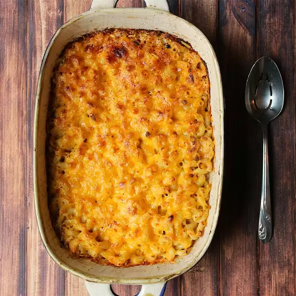

Macaroni

A delicious Macaroni recipe
Most Americans love macaroni and cheese. This dish is common on holidays such as Christmas and Thanksgiving. This recipe will include six different ingredients and microwavable safe dish. This recipe will take fifth teen minutes to prepare and cook for totaling thirty minutes to make. About four servings total will this recipe give.
Ingredients
- 1 cup elbow macaroni
- ¼ cup milk
- 1 (20 ounce) package frozen macaroni and cheese
- ⅛ teaspoon ground black pepper
- 1 ½ cups shredded Cheddar cheese
- 3 tablespoons grated Parmesan cheese
Steps
- Preheat oven broiler. Grease a 1 1/2 quart microwave safe dish.
- Bring a large pot of lightly salted water to a boil. Add pasta and cook for 8 to 10 minutes or until al dente; drain.
- Microwave frozen mac and cheese according to package directions.
- Stir together macaroni, mac and cheese, milk and pepper in prepared dish. Mix well. Microwave on high 2 minutes, until heated through. Sprinkle with Cheddar and Parmesan and place under oven broiler. Broil until cheese is melted and beginning to brown, 2 to 5 minutes.